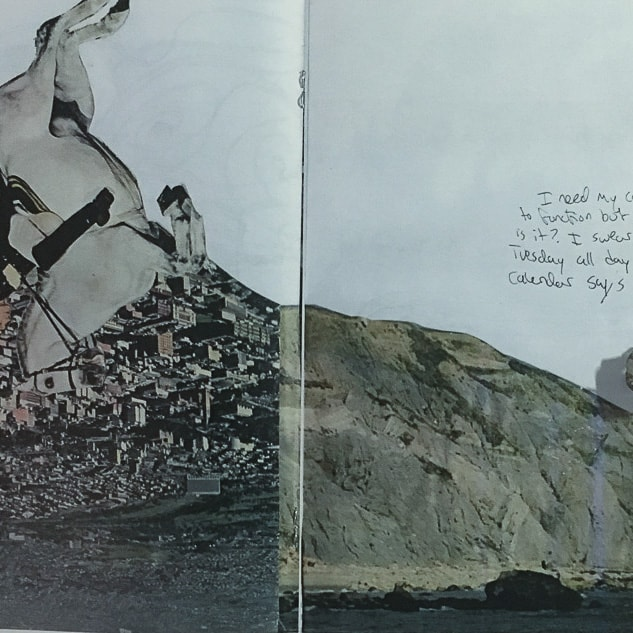
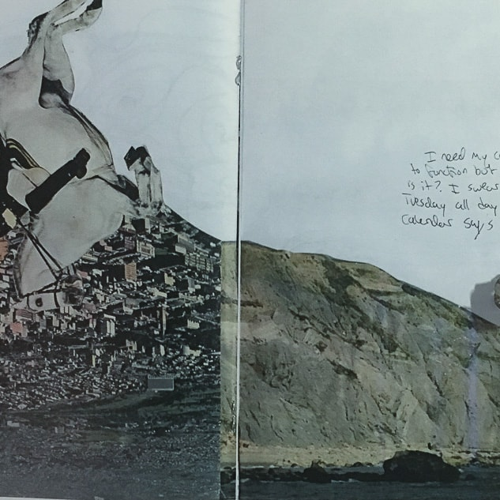
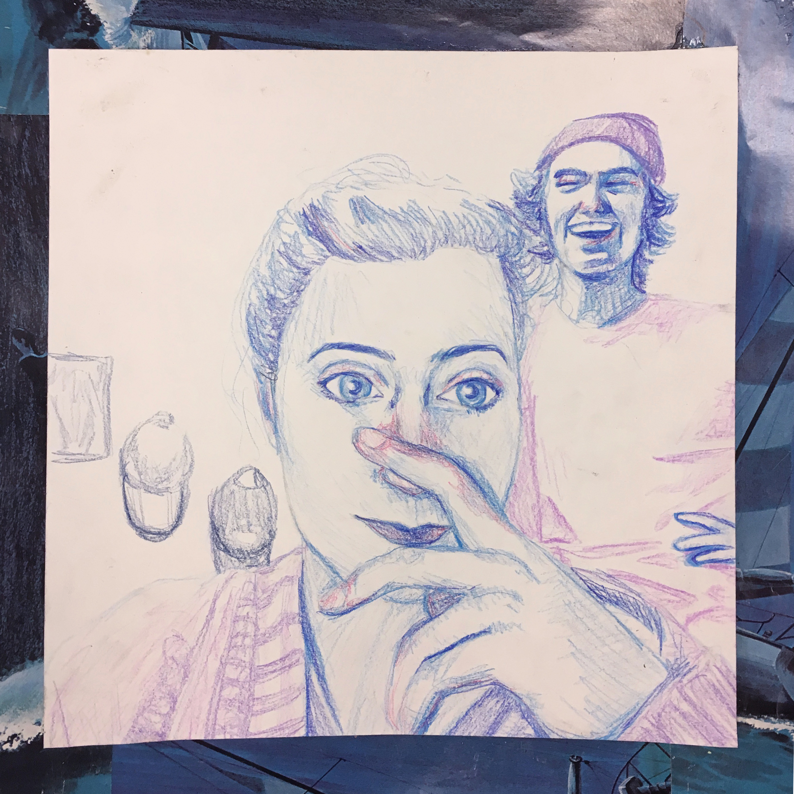
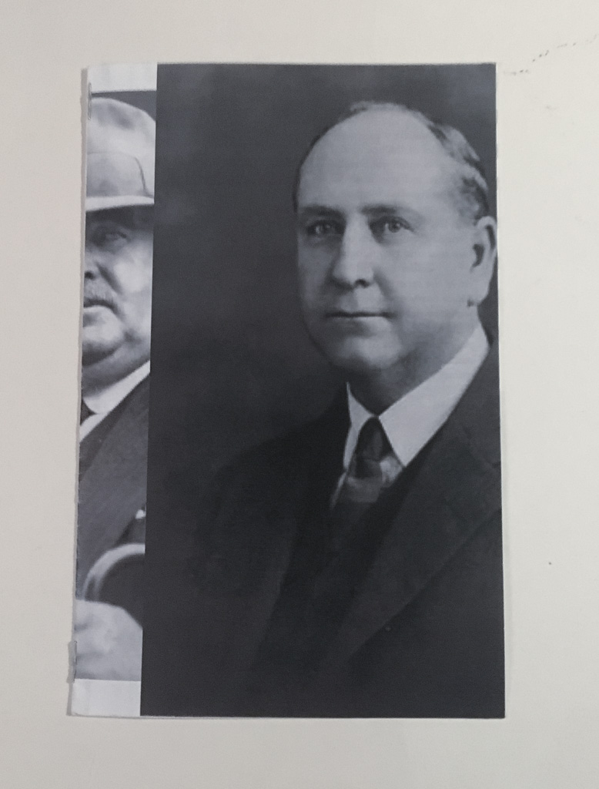
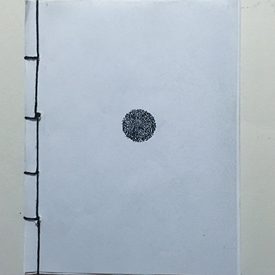
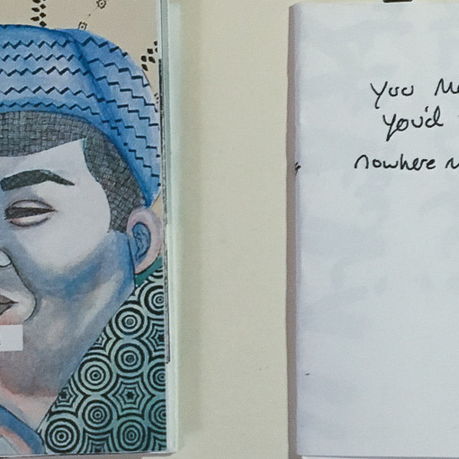
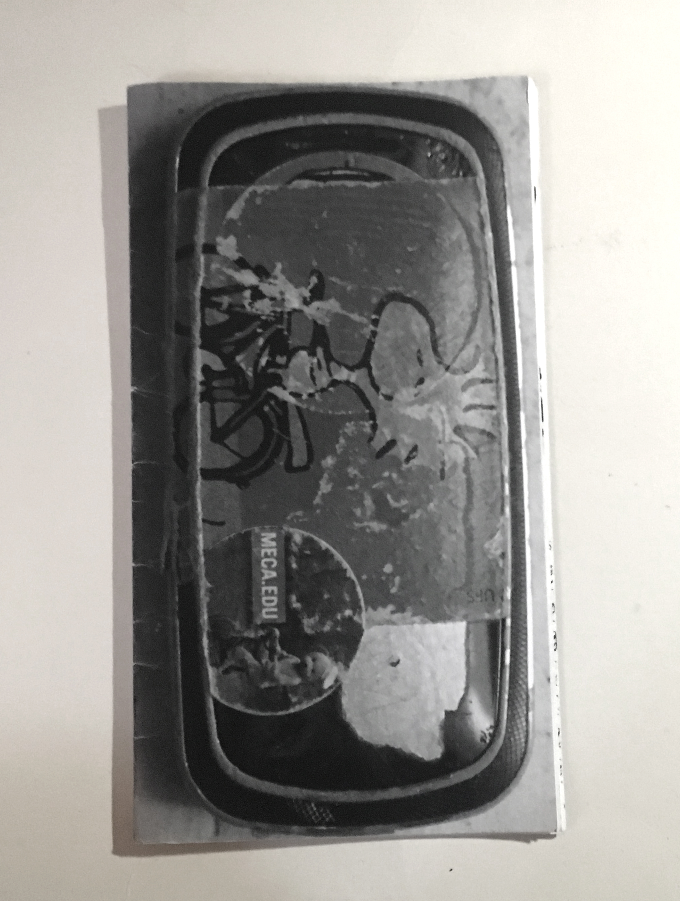
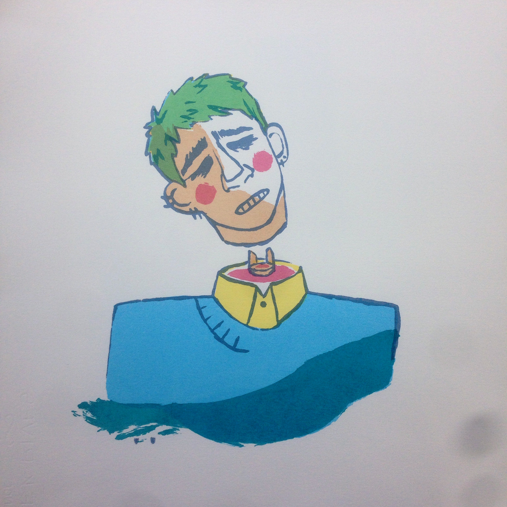
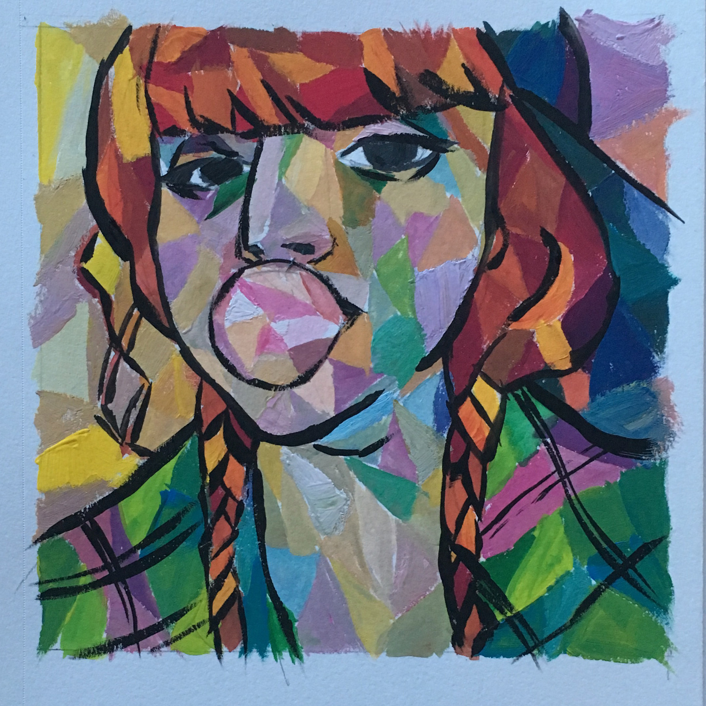

tock
made for non-linear storytelling project in junior graphic design. i created a zine about my relationship with time and then video documenting my process. btw: you can read more of my zines here.
2016
 

commission
colored pencil commission for erin mclaughlin to celebrate her and her boyfriend's anniversary.
2016
collier
made in junior graphic design for popup zine project using content from a random wikipedia page (phillip collier).
2016
entropy
anthology from junior typography. i chose to curate a series of short stories and poems focussing on the universe's trend towards entropy and the progression from order to chaos. btw: i highly recommend actually reading all of these pieces, especially 'on entropy.'
2016
zine diptych
week-long project from junior graphic design. we had to create something based on an early design inspiration. i picked the beatles' yellow submarine movie because i was really inspired by the pattern work and visual aesthetics. one zine is a collection of work i made in high school contrasting with my contemporary art. it opens up to a self portrait in the style of the movie. the other zine is a collection of my favorite lines from the nowhere man.
2017
gazebo
made for junior typography. the book is a retrospective of my friend group's text chat from high school and now and how our conversations and hang outs have changed. fun fact: the cover and back cover are my actual phone from 2012. it was blue and awful.
2017
silkscreen
various prints from silkscreen class.
2017
painting
various watercolor and gouache paintings.
2016-7
